Geographic Data Science
Raster Data
Raster Data
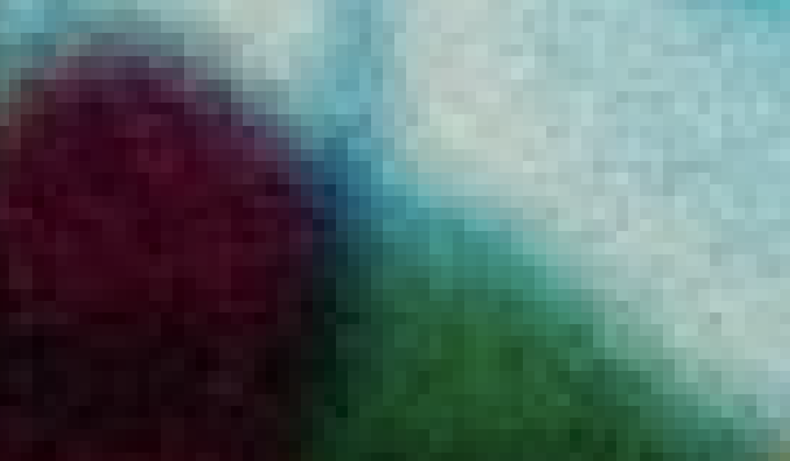
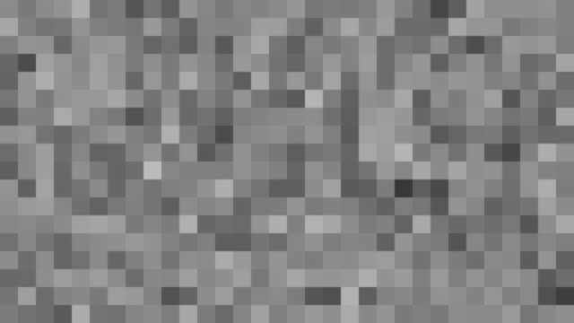
Vector Data
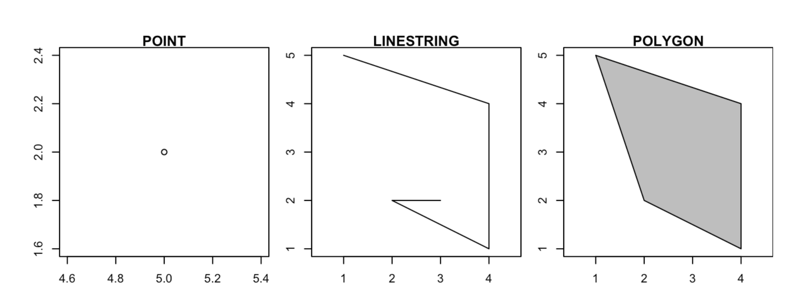
Contrast with Vector Data
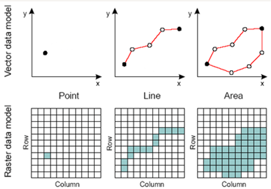
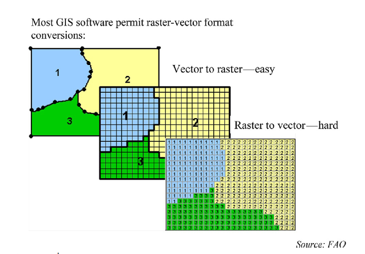
Definition
- Square grid of pixels. Pixel values can represent continuous or categorical variables:
- Divides 2-D space into regular cells - pixels
- Each cell has a single value
- Values assigned according to value at mean, centre point, or some other rule
File Formats


Raster Data Types
Grayscale Rasters
Continuous Data, Single Band

Nightlights data
- Nightlights data can be represented as a grayscale raster, where darker areas indicate lower levels of artificial light, and lighter areas represent higher levels of artificial light.
- The pixel values may represent the radiance or luminance values of nighttime lights.
- Used for monitoring urban development, assessing light pollution, and understanding human activity patterns at night…
Multispectral Rasters
Multiple Bands
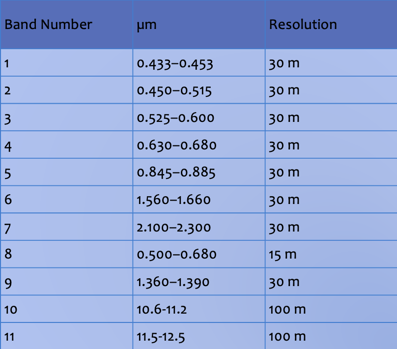
Bands 2, 3 and 4
Blue, green, and red for true-color image.

Landsat Satellite Imagery
- Landsat satellites capture data in multiple spectral bands, such as visible, near-infrared, and thermal infrared.
- Each band is represented as a separate channel in a multispectral raster, allowing for the analysis of various aspects of the Earth’s surface.
- Different bands capture information related to vegetation, water, and land use.
Sources
- High spatial resolution data - costly commercial products.
- Lower spatial resolution data is free (NASA, ESA, etc).
- Several sources:
- USGS Earth Explorer — Landsat, and much else
- NASA Earthdata Search
- AppEEARS — extract by area, no bulk download
- LP DAAC Data Pool
- Copernicus Data Space — Sentinel (replaced the old SciHub)
- Landsat on AWS
Several of these need a free account, and all involve downloading large files.
Color Rasters
Digital Photography, Optical Satellites
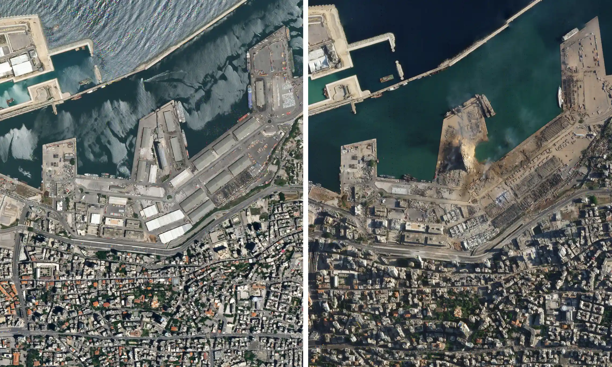
Color Rasters
- Digital photographs are typically stored as color rasters, combining red, green, and blue (RGB) channels to represent a full range of colors.
- Each pixel’s RGB values determine the color in the image.
- Digital cameras and most image-editing software work with RGB color rasters.
Elevation Rasters
Representing Terrain Data
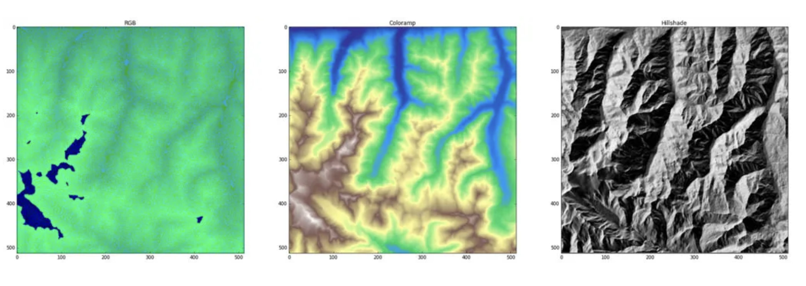
Left: raw RGB, Center: decoded to hypsometric tint, Right: decoded to hillshades
Digital Elevation Models (DEMs)
- Digital Elevation Models are used to represent terrain data.
- DEMs are rasters where each pixel’s value represents the elevation (height) of the corresponding location on the Earth’s surface.
- These rasters are widely used in geospatial applications, including topographic mapping and hydrological modeling.
Resolution
Spatial Resolution
- Level of detail or granularity in the spatial domain of data.
- How well an instrument or sensor can distinguish between objects or features in a given space.
- Higher spatial resolution = more detailed data
- Larger file sizes and Increased data processing demands.
Temporal Resolution
- Accuracy and precision of time measurements
- The higher the temporal resolution, the more frequent and precise the time measurements, allowing for the tracking of fast-changing processes or events.
Data Volume and Storage
- Unprecedented rate of collection.
- Fundamental aspects of data management.
- Challenges associated with handling and storing vast amounts of dat
- Traditional hardware-based solutions vs cloud-based storage (right approach?)
Future Trends
Big Data and Raster Information
- Transforming the way we handle geospatial data.
- Sensors and technology become more sophisticated
- The volume of raster information is growing exponentially.
Machine Learning and Raster Data
- Chen Wangyang, Wu, Abraham Noah, Biljecki and Filip, 2021. Classification of Urban Morphology with Deep Learning: Application on Urban Vitality. Computers, Environment and Urban Systems
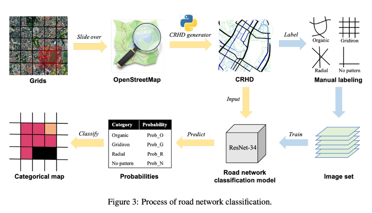
Cloud-Based Raster Data Services
Redefining how we store, process, and share raster data.
The cloud offers scalability, accessibility, and cost-efficiency that traditional on-premises systems can’t match.
Satellite data for Social Science
Henderson et al 2012.
“Measuring economic growth from outer space”, AER.
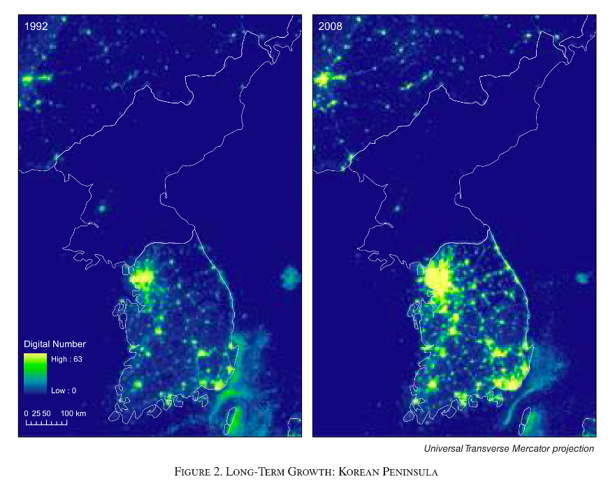
Jean et al. 2016.
“Combining satellite imagery and machine learning to predict poverty.” Science
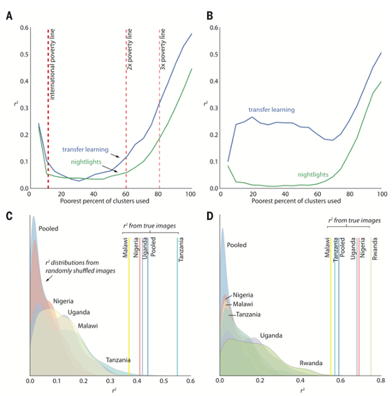
From pixels to policy
The problem with raw imagery
Everything on the last few slides sounds great — but working with raw satellite data is hard
- A single Sentinel-2 scene is several gigabytes
- Half your pixels are hidden under cloud
- Cleaning, mosaicking and modelling needs real compute
- And pixels don’t line up with the units social science actually uses — LSOAs, wards, local authorities
The four steps
Turning a noisy grid of numbers into something usable:
- Raw — spectral values, noisy, partly cloud-covered
- Clean — combine many passes to remove cloud
- Model — convert spectral values into a meaningful indicator (temperature, vegetation, cloud probability)
- Aggregate — pool pixels into administrative units
This is what Imago does
Imago is the imagery data service for sustainability, prosperity and wellbeing — part of Smart Data Research UK, based partly here at Liverpool
They do steps 1–4 for you and publish the result:
- Ready-to-use LSOA/MSOA-level statistics
- No gigabyte downloads, no remote-sensing algorithms
- Small-area detail preserved, not regional averages
You’ve already used this
The SPF (Sun Probability Framework) data you mapped in the choropleths lab?
That’s satellite-derived cloud probability, aggregated to small areas.
Which is the point — someone still has to do the pixel work. This week, that’s you.
Go deeper
Imago training — free, open, in R and Python. Air temperature, precipitation, SPF. Several run in your browser, no install.
imago-sdruk.github.io/Imago_training
From grids to areas
The full walkthrough of everything on the last few slides — spectral bands, resolution, revisit cycles, and the raw → clean → model → aggregate pipeline.
Imago: From grids to areas
In the lab
What you’ll do
Terrain — Lebanon
- Load a DEM, check its CRS, reproject it
- Crop then mask to the country boundary
- Style it properly (breaks, elevation palettes)
- Extract raster values to survey points — the raster→vector bridge
Night lights — Kenya & Tanzania
- Stack multi-year rasters
- Zonal statistics: mean light per administrative region
- Map 1992 vs 2013 — and find the story in it
Two things to watch for
1. CRS mismatches. The single most common reason raster code silently returns NA. Check before you extract, not after.
2. Crop then mask. Both narrow a raster to your area of interest, but cropping first is much faster on large files.
Questions

Geographic Data Science by Elisabetta Pietrostefani is licensed under a Creative Commons Attribution-ShareAlike 4.0 International License.